Group
I am lucky enough to work with a wonderful range of people across several research domains — from processor architecture and reliability through to LLM-aided RTL design and verification.
PhD students
-
Jie Zhou
PhD StudentJie is committed to exploring the application of LLMs in the realm of Hardware Description Languages (HDLs), with a focus on automating the generation and debugging processes.
-
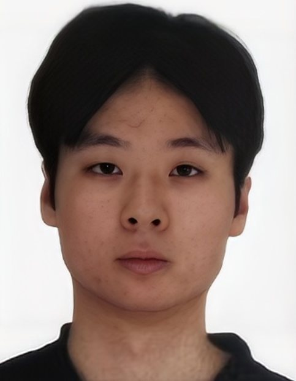
Xiaomeng Han
PhD StudentXiaomeng focuses on software/hardware co-design of LLMs. He is committed to the edge deployment of LLMs through software/hardware co-design, accelerating the application of LLMs in real-world scenarios.
-
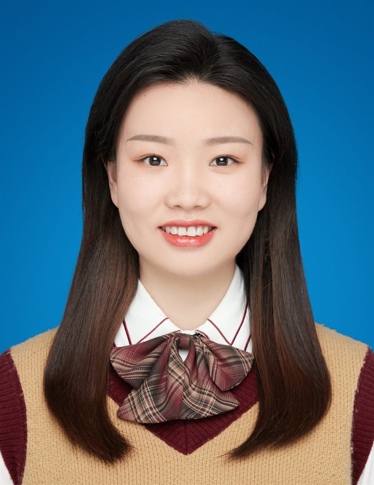
Renshuang Jiang
PhD Student co-supervised with Pan Dong @ NUDTRenshuang works on modular operating-system architecture, including flexible isolation and refactoring systems. She has previously worked on enhancing the safety of the Rust programming language and is also interested in using Rust to rewrite operating systems.
-
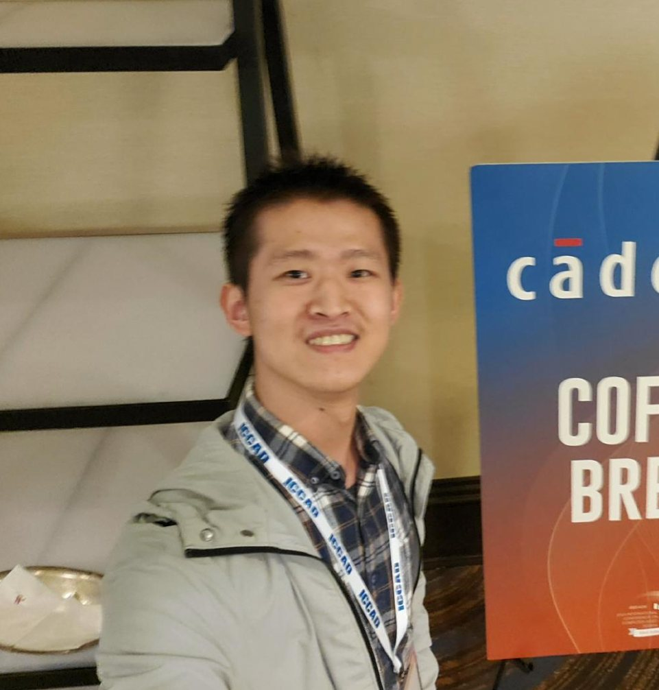
Ke Xu
PhD Student co-supervised with Weiwei Shan @ SEUKe is a PhD candidate in Electronic Science and Technology at Southeast University. His current research focuses on leveraging LLMs for RTL code debugging and multi-server simulation. GitHub.
-
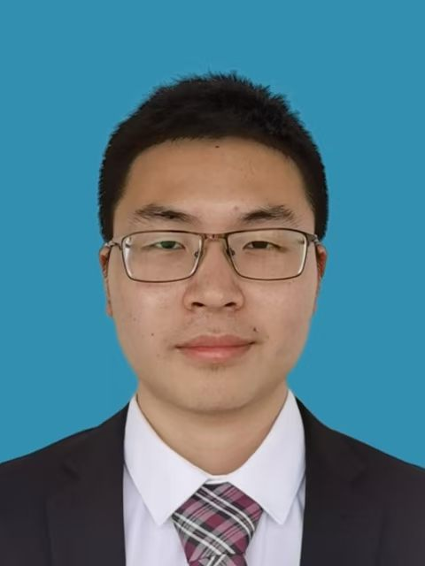
Yuchen Hu
PhD Student co-supervised with Weiwei Shan @ SEUYuchen's research interests include the application of Large Language Models (LLMs) in hardware design verification. He focuses on integrating LLMs with the Universal Verification Methodology (UVM) to automate the testing and repair of error-prone RTL code, aiming to improve verification efficiency and overcome the limitations of existing methods.
-
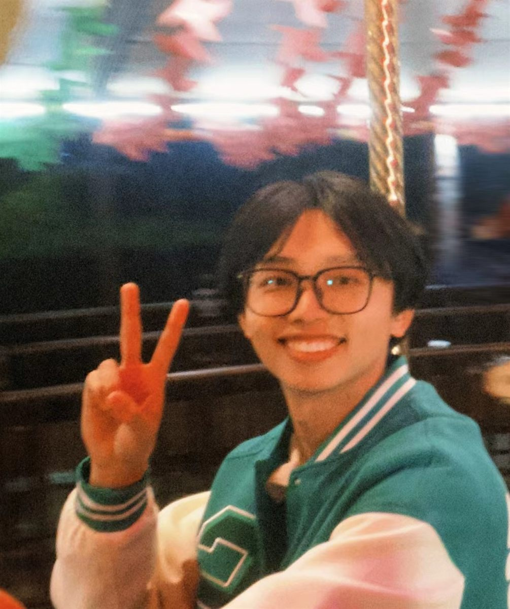
Tinglue Wang
PhD StudentTinglue completed his undergraduate studies at the School of Electronic Science and Engineering, SEU. He is interested in SoC/CPU architecture and digital circuit design, and is working on a safety-critical multi-core CPU architecture project based on the Berkeley Chipyard platform.
-
Zhenghui Zheng
PhD StudentHui is interested in computer-architecture design, real-time operating systems, and computer theory such as scheduling, while also enjoying history, literature and philosophy.
-
Hui Wang
PhD StudentHui's research interests centre on MLSys. He is dedicated to achieving efficient ML through the study of machine-learning algorithms and software/hardware infrastructure. GitHub.
-
Dean You
PhD StudentDean's research interests centre on architectural techniques for: data prefetching for irregular memory-access patterns in hardware; run-time hardware support for processor security and reliability; and fine-grained pre-emptive techniques for NPUs.
-
Junhao Ye
PhD StudentJunhao's research interests centre on the simulation of architectures and the automated debugging of LLMs, as well as the design of AI accelerators. He is currently working on the automated generation of UVM based on LLMs, and was awarded the National Scholarship for Undergraduate Students in 2023. Bilibili.
Master's students
-
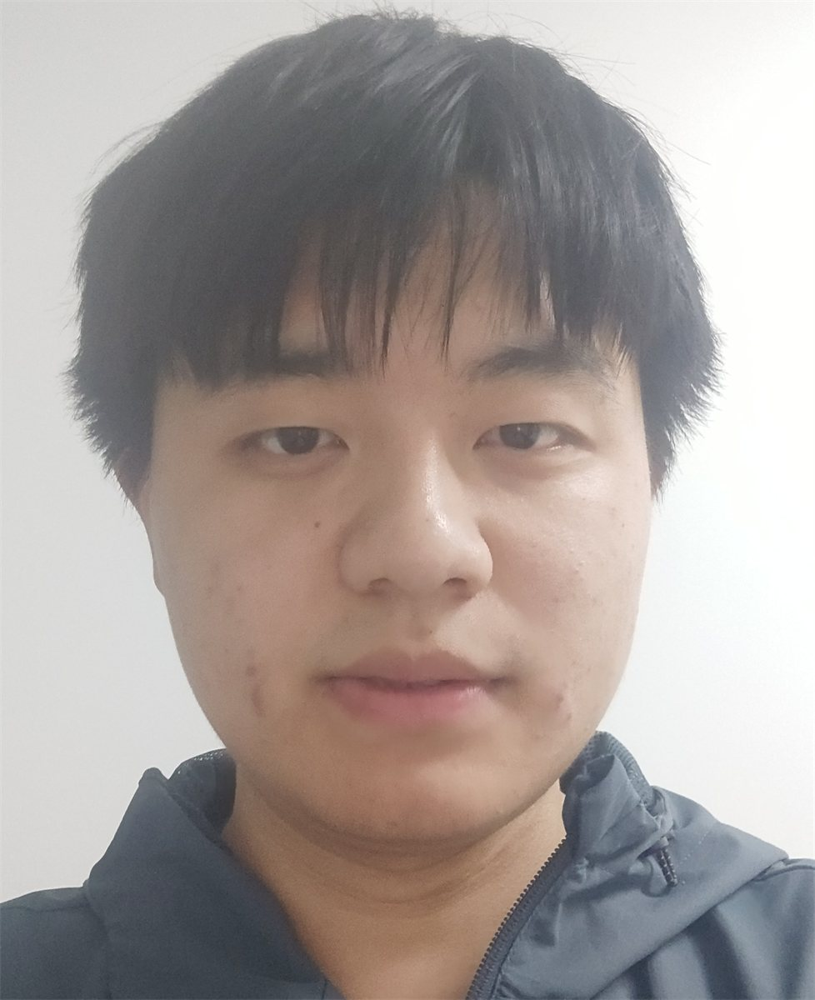
Wei Tang
Master's StudentWei focuses on the collaborative development of safety-critical SoC chips with the RISC-V architecture, with responsibilities including writing and optimising microarchitectural code. Wei also designs and verifies inspection hardware units between the main and slave cores, aiming to correct detected errors and further optimise chip units.
-
Jialin Sun
Master's StudentJialin currently focuses on hardware/software co-simulation accelerators.
-
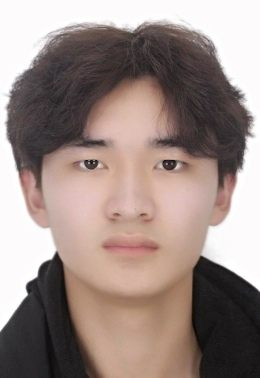
Zhihang Tan
Master's StudentZhihang focuses on hardware-based techniques for data prefetching to address memory latency in CPUs, particularly for irregular memory-access patterns in large-scale data processing. Future work may extend to using simulators for broader evaluation and optimisation.
-
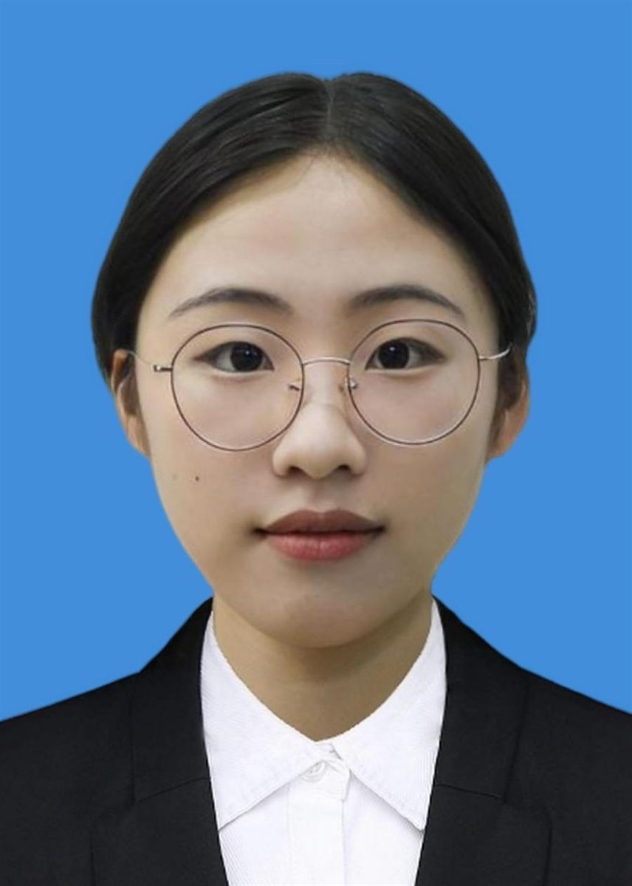
Xiaoxuan Wang
Master's StudentXiaoxuan focuses on hardware-based techniques for data prefetching, based on the execution order of instructions and the access patterns of data. Future work may extend to the architecture and optimisation of out-of-order processors.
-
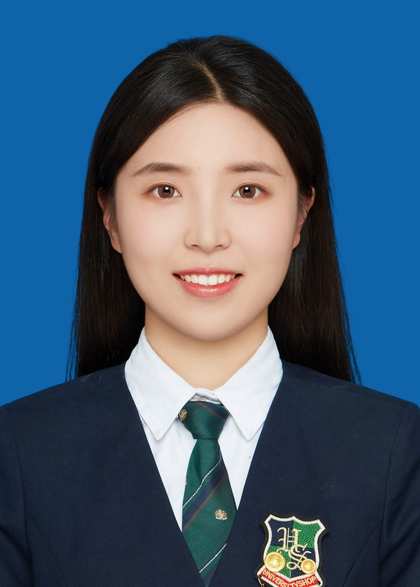
Shiyue Zhang
Master's StudentShiyue completed her undergraduate studies at the School of Electronic Science and Engineering, Southeast University. She is interested in the application of LLMs to circuits and digital circuit design, and is conducting research on the application of LLMs in circuits.
-
Bing Guo
Master's StudentBing's research interests include, but are not limited to, reliability, data prefetching, replacement algorithms and branch prediction. He focuses on developing efficient hardware techniques to improve processor performance and dependability.
-
Zhenyuan Wang
Master's StudentZhenyuan focuses on processor design and optimisation, and is currently exploring data prefetching for irregular access patterns. His work aims to improve processor performance through advanced prefetching techniques and architectural optimisations.
-
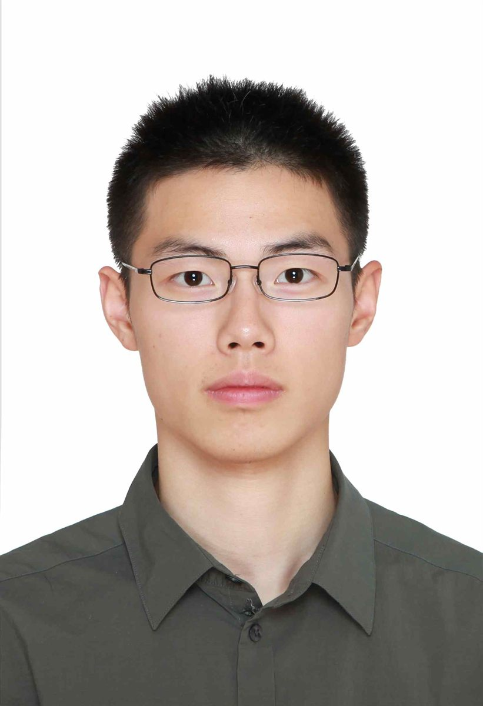
Junyang Lu
Master's StudentJunyang is working on repository-level RTL code completion through iterative retrieval-augmented generation (RAG). This work aims to automate hardware design by leveraging cross-file context to improve generation accuracy. The research addresses semantic gaps through iterative retrieval, seeking to enhance the performance and reliability of large language models in complex RTL development.
-

Xinyao Jiao
Master's StudentXinyao is working on repository-level RTL code generation based on multimodal retrieval-augmented generation (RAG), aiming to improve the automation and efficiency of hardware design. Her research explores how combining code, specifications and simulation signals can enhance the accuracy and reliability of RTL development.
Engineers & research assistants
-
Dingrong Pan
Hardware EngineerDingrong is a hardware verification engineer. She has worked on IP-level verification for large SoC chips, and currently contributes to our project on LLM-based hardware design and verification, focusing on verification and debugging.
-
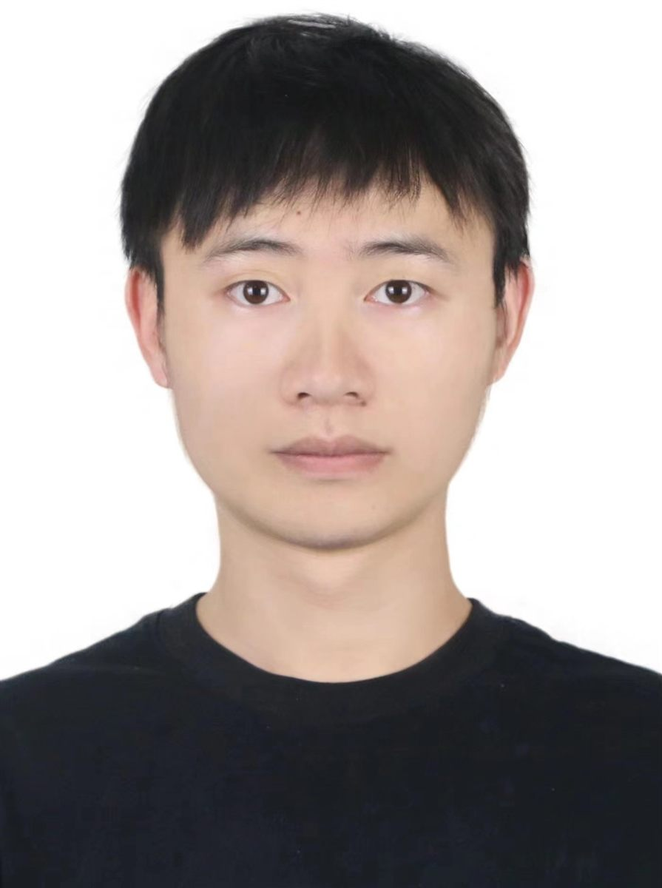
Youshu Ji
Software EngineerYoushu is a software engineer, currently working on our project of LLM-based agile hardware design and verification. GitHub.
-
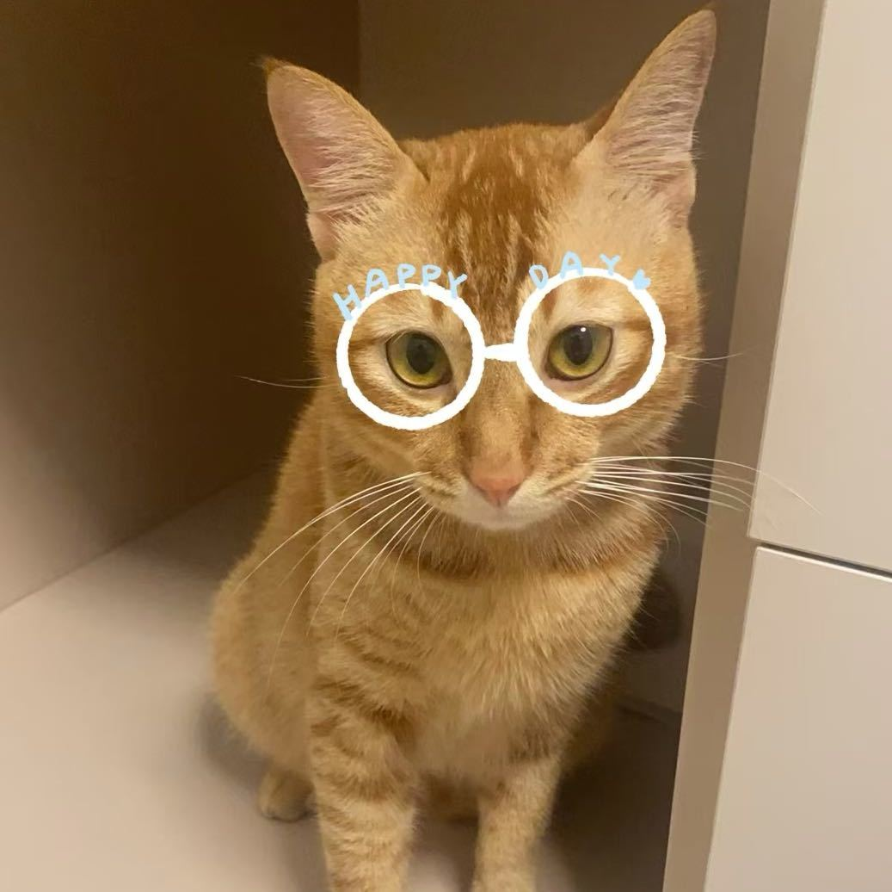
Yushu Du
Research AssistantYushu specialises in high-performance processor design and is currently focused on exploring instruction prefetching and branch-prediction techniques for server-grade processors. Yushu also has a peripheral interest in processor reliability and data-prefetching technologies.
Previous group members
While I am always sorry to see talented members leave the group, I am proud to watch them progress in their careers and make meaningful contributions to industry and academia.
-
Jing Wang
· former Research Assistant
Now a PhD researcher at Huazhong University of Science & Technology (HUST). Jing worked on prefetching and quantisation for NPUs.
-
Yunpeng Zhu
· former Master's Student
Now an IC design engineer at BYD. Yunpeng researched instruction-analysis coprocessors (shadow stack, address sanitiser, etc.) and architectural support and hardware/software co-design for scalar processors.
-
Hongtao Liu
· former Master's Student
Now an IC design engineer at Huawei. Hongtao worked on high-speed interconnects between CPU and accelerators, focusing on optimising data-transfer protocols and reducing communication latency in heterogeneous computing systems.